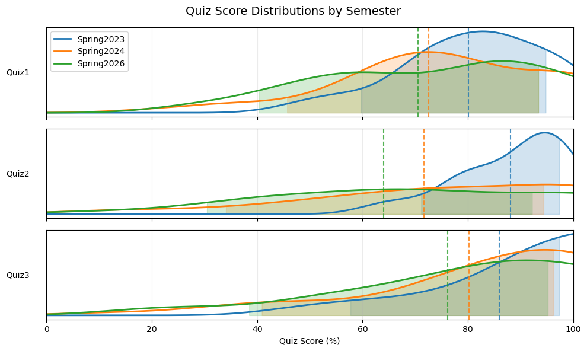
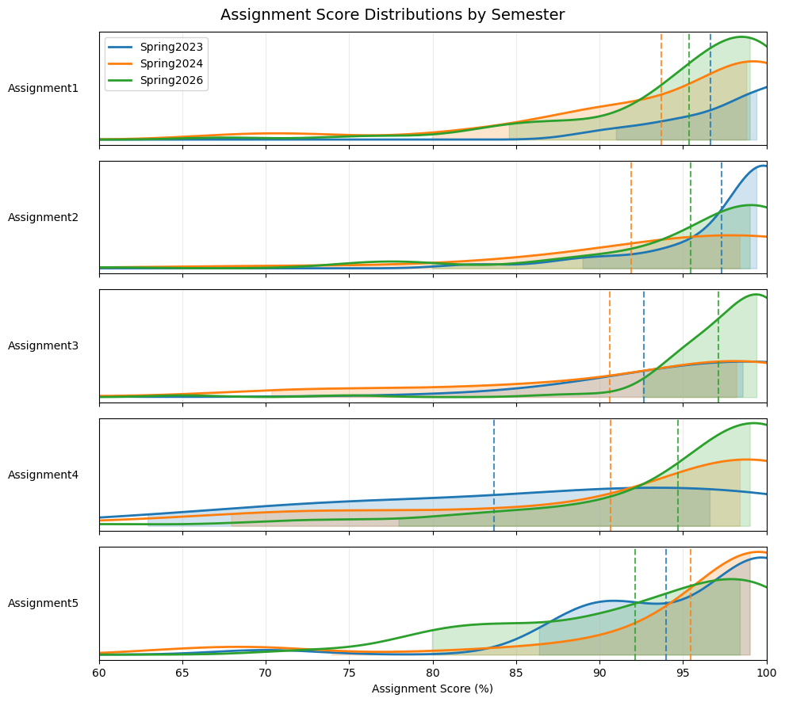
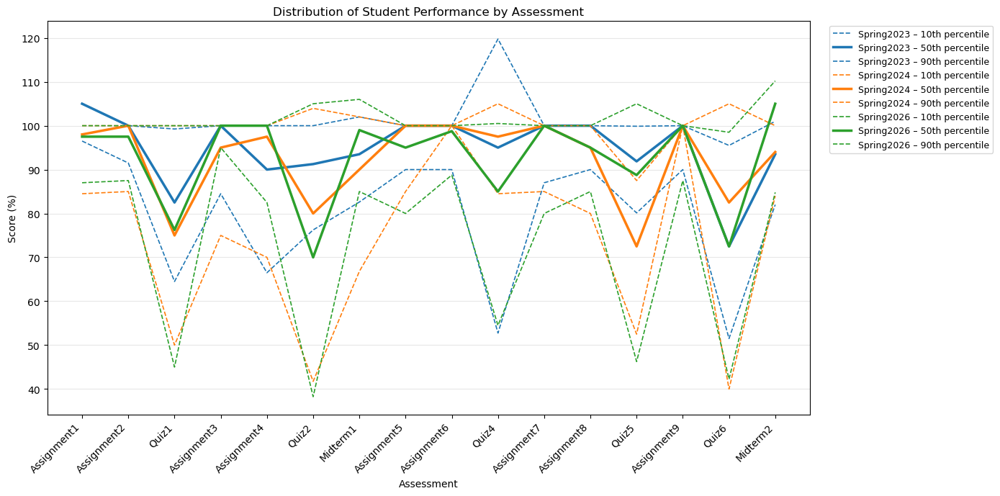
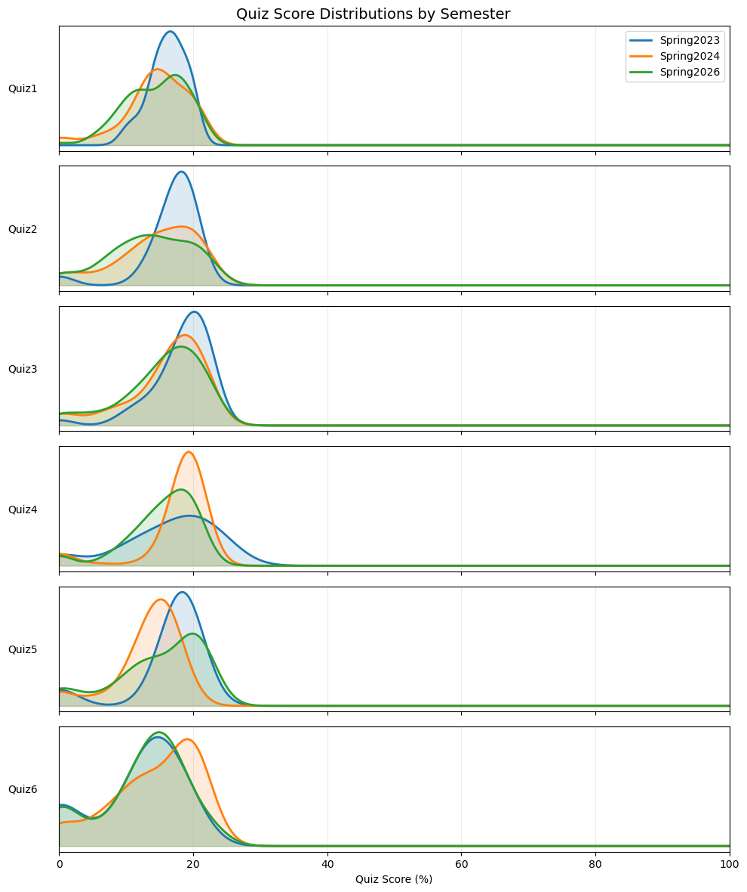

import os
os.chdir(r'C:\Users\pm27995\Downloads')
import pandas as pd
import numpy as np
import matplotlib.pyplot as plt
from scipy.stats import gaussian_kde
file_name = "Grades_Summary.xlsx"
sheets = ["Spring2023", "Spring2024", "Spring2026"]
quizzes = [
"Quiz1", "Quiz2", "Quiz3",
"Quiz4", "Quiz5", "Quiz6"
]
assignments = [
"Assignment1", "Assignment2", "Assignment3","Assignment4", "Assignment5", "Assignment6","Assignment7", "Assignment8", "Assignment9"
]
assessment_order = [
"Assignment1",
"Assignment2",
"Quiz1",
"Assignment3",
"Assignment4",
"Quiz2",
"Midterm1",
"Assignment5",
"Assignment6",
"Quiz4",
"Assignment7",
"Assignment8",
"Quiz5",
"Assignment9",
"Quiz6",
"Midterm2",
]
data = {}
for sheet in sheets:
df = pd.read_excel(file_name, sheet_name=sheet)
# Convert blanks to NaN
df = df.replace(r"^\s*$", np.nan, regex=True)
df = df.replace(0, np.nan)
# Convert quizzes to percentage
for quiz in quizzes:
df[quiz] = pd.to_numeric(
df[quiz], errors="coerce"
) / 20.0 * 100.0
for assignment in assignments:
df[assignment] = pd.to_numeric(
df[assignment], errors="coerce"
) / 20.0 * 100.0
# Convert midterms to percentage
for midterm in ["Midterm1", "Midterm2"]:
if midterm in df.columns:
df[midterm] = pd.to_numeric(
df[midterm], errors="coerce"
) / 50.0 * 100.0
data[sheet] = df
# Fill missing values with NaN
for sheet in data:
data[sheet] = data[sheet].replace(r"^\s*$", np.nan, regex=True)
# ============================================================
# Plot quiz PDFs
# ============================================================
colors = {
"Spring2023": "tab:blue",
"Spring2024": "tab:orange",
"Spring2026": "tab:green"
}
data["Spring2023"]
---------------------------------------------------------------------------
ModuleNotFoundError Traceback (most recent call last)
File ~\AppData\Local\anaconda3\envs\book\lib\site-packages\pandas\compat\_optional.py:142, in import_optional_dependency(name, extra, errors, min_version)
141 try:
--> 142 module = importlib.import_module(name)
143 except ImportError:
File ~\AppData\Local\anaconda3\envs\book\lib\importlib\__init__.py:127, in import_module(name, package)
126 level += 1
--> 127 return _bootstrap._gcd_import(name[level:], package, level)
File <frozen importlib._bootstrap>:1014, in _gcd_import(name, package, level)
File <frozen importlib._bootstrap>:991, in _find_and_load(name, import_)
File <frozen importlib._bootstrap>:973, in _find_and_load_unlocked(name, import_)
ModuleNotFoundError: No module named 'openpyxl'
During handling of the above exception, another exception occurred:
ImportError Traceback (most recent call last)
Cell In[2], line 42
38 data = {}
40 for sheet in sheets:
---> 42 df = pd.read_excel(file_name, sheet_name=sheet)
44 # Convert blanks to NaN
45 df = df.replace(r"^\s*$", np.nan, regex=True)
File ~\AppData\Local\anaconda3\envs\book\lib\site-packages\pandas\io\excel\_base.py:478, in read_excel(io, sheet_name, header, names, index_col, usecols, dtype, engine, converters, true_values, false_values, skiprows, nrows, na_values, keep_default_na, na_filter, verbose, parse_dates, date_parser, date_format, thousands, decimal, comment, skipfooter, storage_options, dtype_backend)
476 if not isinstance(io, ExcelFile):
477 should_close = True
--> 478 io = ExcelFile(io, storage_options=storage_options, engine=engine)
479 elif engine and engine != io.engine:
480 raise ValueError(
481 "Engine should not be specified when passing "
482 "an ExcelFile - ExcelFile already has the engine set"
483 )
File ~\AppData\Local\anaconda3\envs\book\lib\site-packages\pandas\io\excel\_base.py:1513, in ExcelFile.__init__(self, path_or_buffer, engine, storage_options)
1510 self.engine = engine
1511 self.storage_options = storage_options
-> 1513 self._reader = self._engines[engine](self._io, storage_options=storage_options)
File ~\AppData\Local\anaconda3\envs\book\lib\site-packages\pandas\io\excel\_openpyxl.py:548, in OpenpyxlReader.__init__(self, filepath_or_buffer, storage_options)
533 @doc(storage_options=_shared_docs["storage_options"])
534 def __init__(
535 self,
536 filepath_or_buffer: FilePath | ReadBuffer[bytes],
537 storage_options: StorageOptions = None,
538 ) -> None:
539 """
540 Reader using openpyxl engine.
541
(...)
546 {storage_options}
547 """
--> 548 import_optional_dependency("openpyxl")
549 super().__init__(filepath_or_buffer, storage_options=storage_options)
File ~\AppData\Local\anaconda3\envs\book\lib\site-packages\pandas\compat\_optional.py:145, in import_optional_dependency(name, extra, errors, min_version)
143 except ImportError:
144 if errors == "raise":
--> 145 raise ImportError(msg)
146 return None
148 # Handle submodules: if we have submodule, grab parent module from sys.modules
ImportError: Missing optional dependency 'openpyxl'. Use pip or conda to install openpyxl.
# ============================================================
# Plot quiz distributions: P10-P90 + P50
# ============================================================
colors = {
"Spring2023": "tab:blue",
"Spring2024": "tab:orange",
"Spring2026": "tab:green"
}
fig, axes = plt.subplots(
nrows=3,
ncols=1,
figsize=(10, 6),
sharex=True
)
x = np.linspace(0, 100, 500)
for ax, quiz in zip(axes, quizzes[:3]):
for semester in sheets:
values = data[semester][quiz].dropna().values
if len(values) < 2:
continue
kde = gaussian_kde(values)
pdf = kde(x)
# CDF of the KDE
dx = x[1] - x[0]
cdf = np.cumsum(pdf) * dx
cdf /= cdf[-1]
# Find P10, P50, P90 of the distribution
p10 = np.interp(0.10, cdf, x)
p50 = np.interp(0.50, cdf, x)
p90 = np.interp(0.90, cdf, x)
# PDF height at the percentile locations
y10 = np.interp(p10, x, pdf)
y50 = np.interp(p50, x, pdf)
y90 = np.interp(p90, x, pdf)
# Plot PDF
ax.plot(
x,
pdf,
color=colors[semester],
linewidth=2,
label=semester
)
# Shade the P10-P90 region of the PDF
mask = (x >= p10) & (x <= p90)
ax.fill_between(
x[mask],
pdf[mask],
0,
color=colors[semester],
alpha=0.20
)
# Mark median
ax.axvline(
p50,
color=colors[semester],
linestyle="--",
linewidth=1.5,
alpha=0.8
)
ax.set_ylabel(
quiz,
rotation=0,
labelpad=35,
va="center"
)
ax.set_yticks([])
ax.grid(True, axis="x", alpha=0.25)
axes[-1].set_xlabel("Quiz Score (%)")
axes[-1].set_xlim(0, 100)
axes[0].legend(loc="upper left")
fig.suptitle(
"Quiz Score Distributions by Semester",
fontsize=14
)
plt.tight_layout()
plt.show()

# ============================================================
# Plot Assignment PDFs: P10-P90 + P50
# ============================================================
assignments = [
"Assignment1",
"Assignment2",
"Assignment3",
"Assignment4",
"Assignment5"
]
fig, axes = plt.subplots(
nrows=5,
ncols=1,
figsize=(10, 9),
sharex=True
)
x = np.linspace(0, 100, 500)
for ax, assignment in zip(axes, assignments):
for semester in sheets:
values = pd.to_numeric(
data[semester][assignment],
errors="coerce"
).dropna().values
if len(values) < 2:
continue
# KDE
kde = gaussian_kde(values)
pdf = kde(x)
# CDF of KDE
dx = x[1] - x[0]
cdf = np.cumsum(pdf) * dx
cdf /= cdf[-1]
# P10, P50, P90
p10 = np.interp(0.10, cdf, x)
p50 = np.interp(0.50, cdf, x)
p90 = np.interp(0.90, cdf, x)
# Plot PDF
ax.plot(
x,
pdf,
color=colors[semester],
linewidth=2,
label=semester
)
# Shade P10-P90
mask = (x >= p10) & (x <= p90)
ax.fill_between(
x[mask],
pdf[mask],
0,
color=colors[semester],
alpha=0.20
)
# Median
ax.axvline(
p50,
color=colors[semester],
linestyle="--",
linewidth=1.5,
alpha=0.8
)
ax.set_ylabel(
assignment,
rotation=0,
labelpad=50,
va="center"
)
ax.set_yticks([])
ax.grid(True, axis="x", alpha=0.25)
axes[-1].set_xlabel("Assignment Score (%)")
axes[-1].set_xlim(60, 100)
axes[0].legend(loc="upper left")
fig.suptitle(
"Assignment Score Distributions by Semester",
fontsize=14
)
plt.tight_layout()
plt.show()

# ============================================================
# Calculate percentiles
# ============================================================
percentiles = [10, 50, 90]
results = {}
for semester, df in data.items():
# Make sure assessment columns are numeric
for col in assessment_order:
if col in df.columns:
df[col] = pd.to_numeric(df[col], errors="coerce")
# Calculate percentile across students
results[semester] = pd.DataFrame(
{
col: np.nanpercentile(df[col].dropna(), percentiles)
if df[col].notna().any()
else [np.nan] * len(percentiles)
for col in assessment_order
},
index=percentiles
)
# ============================================================
# Plot
# ============================================================
fig, ax = plt.subplots(figsize=(14, 7))
# One color per semester
colors = {
"Spring2023": "tab:blue",
"Spring2024": "tab:orange",
"Spring2026": "tab:green"
}
# Different line styles for percentiles
linestyles = {
10: "--",
50: "-",
90: "--"
}
# Slightly different transparency for the percentile lines
linewidths = {
10: 1.2,
50: 2.5,
90: 1.2
}
x = np.arange(len(assessment_order))
for semester in sheets:
result = results[semester]
for percentile in percentiles:
y = result.loc[percentile].values
ax.plot(
x,
y,
color=colors[semester],
linestyle=linestyles[percentile],
linewidth=linewidths[percentile],
label=f"{semester} – {percentile}th percentile"
)
# ============================================================
# Formatting
# ============================================================
ax.set_xticks(x)
ax.set_xticklabels(
assessment_order,
rotation=45,
ha="right"
)
ax.set_ylabel("Score (%)")
ax.set_xlabel("Assessment")
ax.set_title(
"Distribution of Student Performance by Assessment"
)
ax.grid(True, axis="y", alpha=0.3)
# Put legend outside plot
ax.legend(
bbox_to_anchor=(1.02, 1),
loc="upper left",
fontsize=9
)
plt.tight_layout()
plt.show()

import pandas as pd
import numpy as np
import matplotlib.pyplot as plt
from scipy.stats import gaussian_kde
# ============================================================
# Plot quiz PDFs
# ============================================================
quizzes = [
"Quiz1",
"Quiz2",
"Quiz3",
"Quiz4",
"Quiz5",
"Quiz6"
]
colors = {
"Spring2023": "tab:blue",
"Spring2024": "tab:orange",
"Spring2026": "tab:green"
}
fig, axes = plt.subplots(
nrows=6,
ncols=1,
figsize=(10, 12),
sharex=True
)
x = np.linspace(0, 100, 500)
for ax, quiz in zip(axes, quizzes):
for semester in sheets:
# Convert to numeric and remove missing values
values = pd.to_numeric(
data[semester][quiz],
errors="coerce"
).dropna().values
# Skip if insufficient data
if len(values) < 2:
continue
# KDE
kde = gaussian_kde(values)
pdf = kde(x)
# Plot sideways PDF
ax.plot(
x,
pdf,
color=colors[semester],
linewidth=2,
label=semester
)
# Fill underneath
ax.fill_between(
x,
pdf,
alpha=0.15,
color=colors[semester]
)
ax.set_ylabel(quiz, rotation=0, labelpad=35, va="center")
ax.set_yticks([])
ax.grid(
True,
axis="x",
alpha=0.25
)
# Common x-axis
axes[-1].set_xlabel("Quiz Score (%)")
axes[-1].set_xlim(0, 100)
# One legend
axes[0].legend(
loc="upper right"
)
fig.suptitle(
"Quiz Score Distributions by Semester",
fontsize=14
)
plt.tight_layout()
plt.show()
